CS 180: Computer Vision and Computational Photography
Project Overview
In this project, I produce a "morph" animation of my face into someone else's face (Roger Federer), compute the mean of a population of faces, from the open source FEI database and extrapolate from this population mean to create a caricature of myself. I also use image warping/morphing to come up with a new image of myself with a hypothetical change in gender, among other Bells and Whistles.
Part 1: Defining Corresondences
In the pursuit of morphing one image into another, we need to hand-label a set of corresponding points, henceforth referred as correspendences, in both images. I first align and rescale the source and destination images and then use the provided corresponsence labelling tool for this process.
I then compute a Delaunay Triangulation of both these images segment the images into triangles that can be warped.
Vishnu Aligned, Rescaled and Triangulated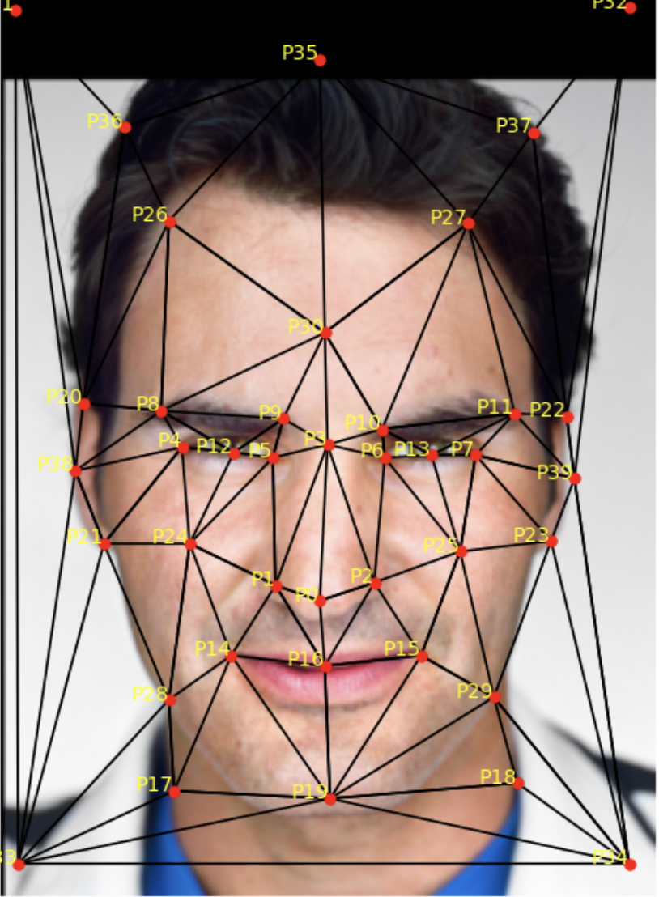Federer Aligned, Rescaled and Triangulated
Part 2: Computing the Midway Face
To compute the mid-way face for me and Angela, I did the following steps:
Compute the average shape using the formula: avg_shape = 1⁄2 (im1_pts + im2_pts)
Calculate the inverse of the affine transformation matrix A between the original triangle in each image and the corresponding triangle in the average shape.
Do inverse warping with this matrix, using polygon to mask all the pixels.
Cross-dissolve by averaging the warped images.
Vishnu Aligned and Rescaled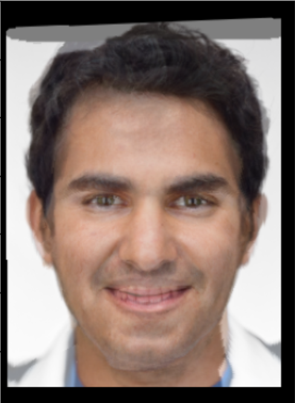Vishnu and Federer Midway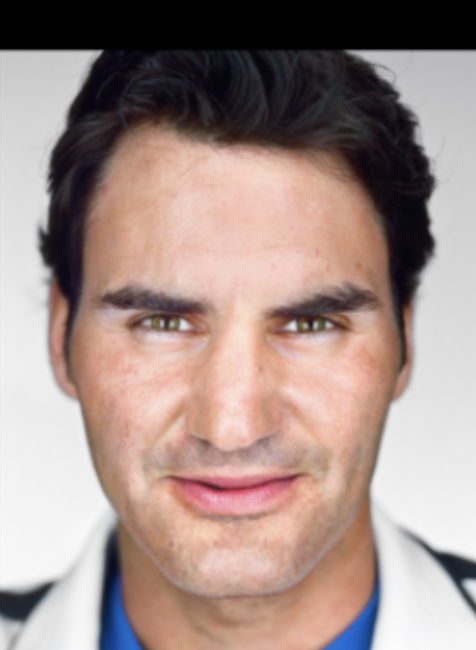Federer Aligned and Rescaled
Part 3: The Morph Sequence
In this part I create a function morph that enables me to control the amount I can morph both the geometry and the appearance of the result image. For both these controllables, 0 meant fully Vishnu and 1 meant fully Roger and 0->1 was a transition from Vishnu to Roger. The inverse warp transformation matrix dealt with geometry and cross-dissolve dealt with appearance.
I then create a video containing 45 frames of animation numbered 0-45, where frame 0 is identical to me and frame 45 is identical to Roger. In the video, each frame is displayed for 1/30 of a second (ie. 30 fps).
Vishnu Suresh ---> Roger Federer gif!!
In video format!!
Part 4: The "Mean Face" of a Population
In this part, I use the open-source pre-annotated image dataset provided by FEI. I made the choice to use only the happy images from this dataset as it would align better with my image where I was happy and smiling as well. Since this dataset contained only grey-scaled images, I used a grey-scaled version of me for this part.
These were the steps used to implement this part of the project:
Compute the average shape from the "Happy" subset of the FEI dataset images.
Morph each of the faces in the dataset into the average shape.
Do inverse warping with this matrix, using polygon to mask all the pixels.
Compute the average face of the population
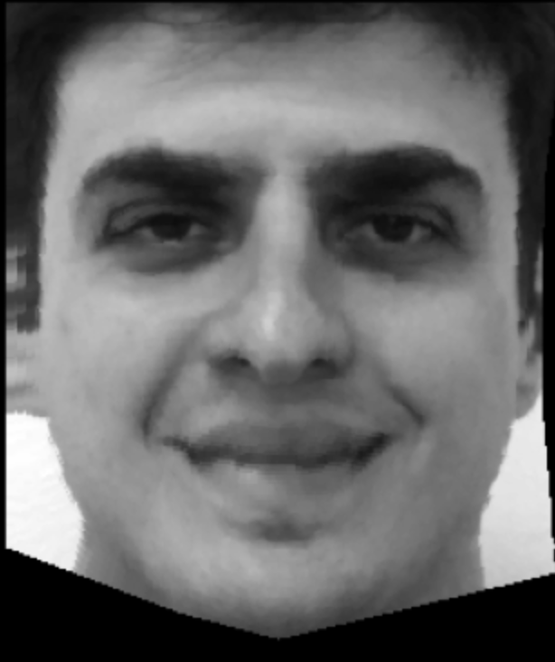Morphed into average example 1Morphed into average example 2 (Sorry for this being scary!)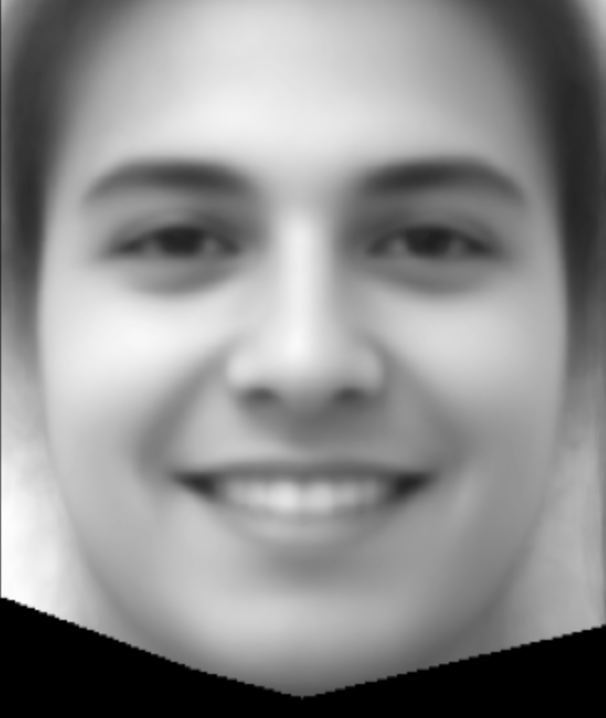The average of the population
Here is how I look (and how they look) when morphed:
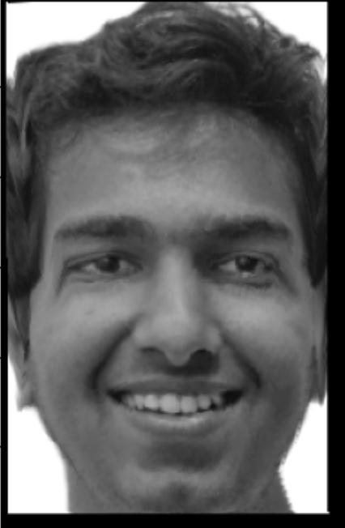Vishnu morphed into average geometry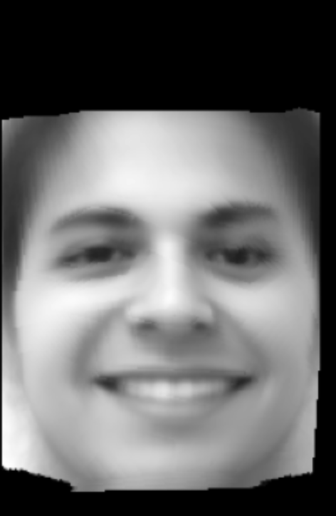Average Face Moprhed into Vishnu's Geometry
Part 5: Caricatures: Extrapolating from the Mean
Here, I produce a caricature of my face by extrapolating from the population mean I calculated in the step above. This is done using the formula me + alpha * (avg - me) with alpha values less than 0 or greater than 1.
Here are some results
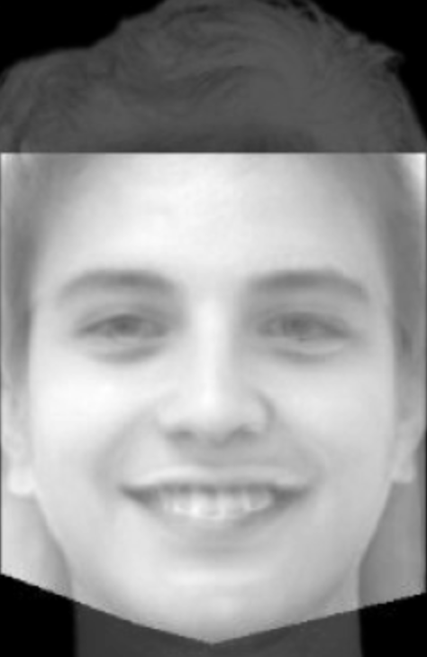Caricature at alpha = 1.7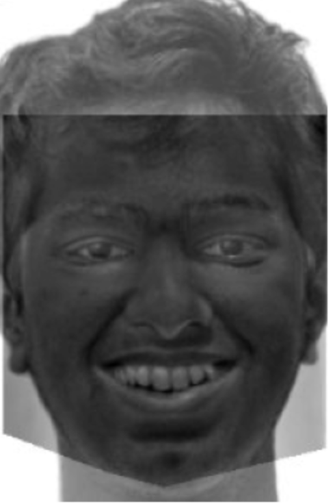Caricature at alpha = -1.7
Bells and Whistles #1
I use the power of image morphing to warp myself into an average South Indian woman. The reason I picked this demographic is because I am South Indian and therefore the results generated would be more realistic than others. The reference average South Indian woman picture was scraped from the web.
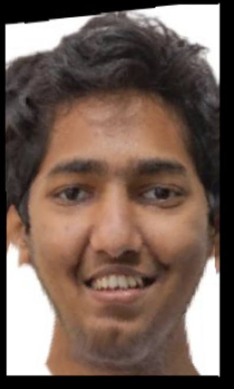Vishnu's geometry morphed into the South Indian woman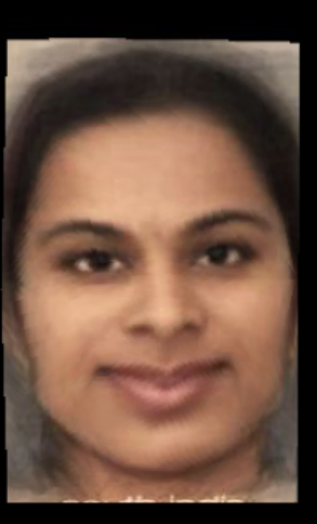Vishnu's appearance morphed into the South Indian woman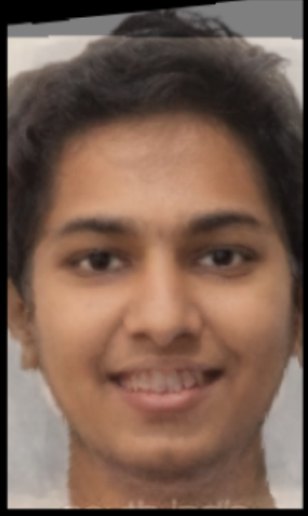Vishnu is now someone else!
Bells and Whistles #2
India recently won the ICC Men's T20 Cricket World Cup. Here is a music video of some of the prominent members of the team with some fitting music in the background.
The cricketers in the video (in the order of appearance) are Rohit Sharma (Captain), Virat Kohli, Ravichandran Ashwin, Jasprit Bumrah, Rishabh Pant, and Ravindra Jadeja. This video contains non-copyright music and uses Canva Video editing software for stitching the videos together.
This video shows the morphing sequence of popular Indian Cricketers.